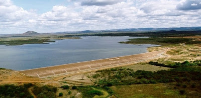
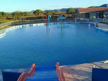

Informações técnicas sobre relevo, população, IDH etc.
| INFORMAÇÕES | |
|---|---|
| Municípios limítrofes | Norte: Crateús; Sul: Quiterianópolis; Leste: Indepêndencia; Oeste: Assunção do Piauí e São Miguel do Tapuio - PI |
| Fundação | 03 de março de 1902 |
| Emancipação | 10 de outubro de 1957 (63 anos) |
| População total | 67 461 hab |
| Densidade | 28,9 hab./km² |
| Área total | 949,206 km² |
| Clima | Tropical quente semiárido (As)[3] |
| Altitude | 333 m |
| IDH | 0,602 — médio |
| PIB | R$ 91 015,699 mil |
| INFORMAÇÕES TERRITORIAIS | |
|---|---|
| Número de habitantes | 28 607 habitantes |
| Superfície de Novo Oriente |
94 623 hectares
946,23 km² (365,34 sq mi) |
| Densidade populacional | 30,2 ha./km² |
| Altitude de Novo Oriente | 348 metros de altitude |
| Coordenadas geográficas decimais |
Latitude:
-5.53394
Longitude: -40.7751 |
| Coordenadas geográficas sexagesimais | Latitude: 5° 32' 2'' Sul , Longitude: 40° 46' 30'' Oeste |
| INFORMAÇÕES DO MUNICÍPIO | ||
|---|---|---|
| Endereço da Prefeitura Municipal de Novo Oriente |
Fortaleza
Prefeitura de Novo Oriente
Rua Deocleciano Aragão, 15 NOVO ORIENTE - CE, 63740-00 Brasil Work +55 88 3629-1712 Fax +55 88 3629-1166 |
|
| Telefone da prefeitura |
(88) 3629-1712
Internacional: +55 88 3629-1712 |
|
| Fax |
(88) 3629-1166
Internacional: +55 88 3929-1166 |
|
| Endereço electrónicoda prefeitura |
Não disponível
|
|
| Site oficial do município | < href="https://www.novooriente.ce.gov.br" rel="noopener" target="_blank" title="Website do município"> novooriente.ce.gov.br [ | |
| INFORMAÇÕES DO ADMINISTRATIVAS | ||
|---|---|---|
| Prefeito de Novo Oriente | JESUÍNO RODRIGUES DE SAMPAIO NETO | |
| Partido politico | SOLIDARIEDADE | |
| INFORMAÇÕES DE TRANSPORTE | |
|---|---|
| Transporte urbano disponível | - |
| Aeroporto |
Aeroporto de Picos
189.2 km
Aeroporto de Sobral
211.8 km
Aeroporto Senador Petrônio Portella
233.1 km
|
| INFORMAÇÕES DE DISTÂNCIA A OUTRAS CIDADES | ||
|---|---|---|
| São Paulo : 2102 km | Rio de Janeiro : 1951 km | Brasília : 1383 km |
| Salvador : 864 km | Belo Horizonte : 1886 km | Manaus : 2154 km |
| Curitiba : 2393 km | Fortaleza : 320 km mais perto | Goiânia : 1547 km |
| Belém : 971 km | Porto Alegre : 2939 km | Guarulhos : 2081 km |
| Campinas : 2048 km | São Luís : 515 km | Recife : 709 km |
| Distância calculada em linha reta! | ||
Conheça mais sobre a história de Novo Oriente.
As terras da Microrregião do Sertão de Crateús, ao sul da Chapada da Ibiapaba, onde localizam-se os afluentes do rio Poti, eram habitadas pelos índios Karatis, antes da chegada dos portugueses e a implementação das sesmarias no século XVII. Com o sucesso da economia do ciclo da Carne-seca e charque, nas proximidades da Lagoa do Tigre surgiu em ponto de parada para o gado que era transportado para o Piauí através da vila piauiense de Piranhas (Crateús). Desse ponto de parada surgiu um povoado.
O povoado as margens da Lagoa do Tigre chegou a pertencer ao Piauí, e no ano de 1880, este foi anexado ao território do Ceará, como resultado da solução encontrada para o litígio territorial entre estes dois estados. O Ceará reconheceu a jurisdição do Piauí sobre o município de Amarração (Luís Correia) e em troca o Piauí ofereceu dois importantes municípios piauienses: Independência e Príncipe Imperial (Que mais tarde viria a se chamar Crateús).
Novo Oriente tornou-se distrito de Independência, mais tarde passando a se emancipar em 1957. O pioneiro do povoamento de Novo Oriente foi o Capitão Rodrigo Alves da Silva, por ter sido o primeiro a construir moradia naquela região nas proximidades da lagoa do Tigre.
Novo Oriente tornou-se distrito do município de Independência por força de Ato datado de 3 de março de 1902. Somente no dia 10 de outubro de 1957, a Lei Nº 3.855 institui o município de Novo Oriente, graças aos esforços de José Claudino Sales e Gonçalo Claudino Sales, que se destacaram na batalha judicial pela sua emancipação política.
A sua instalação, ainda que simbólica, com um subprefeito nomeado pelo prefeito de Independência, ocorreu no dia 15 de dezembro do mesmo ano. O primeiro prefeito oficial do município, José Claudino Sales, tomou posse no dia 25 de março de 1959. A paróquia local, cujo santo é São Francisco, foi criada em 1954.
O nome Novo Oriente surgiu do primeiro sacerdote da localidade, padre Afonso de Gouveia, vigário de Independência, que veio celebrar a primeira missa. Na ocasião, o mesmo, achando a situação geográfica com muitos montes, lembrou-se do Oriente e teve a ideia de atribuir a esta região, o poético nome de Novo Oriente.
Novo Oriente foi parte do território piauiense, como Crateús e Independência. No século XIX, passou a pertencer ao Ceará, com a troca da região do Vale do Rio Poty que era Piauí, com o Porto de Amarração, litoral do Ceará, hoje denominado Luís Correia. A lei geral 3.012 de 22 de outubro de 1880 regulamentou a permuta.
No século XVIII quando Príncipe Imperial, hoje Crateús e Pelo Sinal, hoje Independência, eram apenas grandes fazendas de criar gado, os vaqueiros eram poucos e percebiam o desaparecimento de animais no fim do inverno, quando decidiam se aventurar mata adentro, seguindo o curso do rio Poty, em busca do gado que sumia. A observação cuidadosa dos vaqueiros os fez encontrar rastros de gado. Foram rastreando as marcas deixadas pelos animais e abrindo veredas na mata fechada que chegaram a uma bela paisagem, onde havia uma grande lagoa, cercada de mato. Foi desvendado o caminho do veraneio do gado. (Livro - Novo Oriente: Uma Construção Histórica)
Saiba mais sobre os melhores lugares e o que fazer em Novo Oriente.
O AÇUDE FLOR DO CAMPO Foi um dos pontos turístico mais visitado no municipio, adorado pelos visitantes de toda região do sertão dos Inhamuns, atualmente o açude não tem nem 1% de sua capacidade de abastecimento, diminuiu bastante o numero de visitantes que vinham até o açude para se divertir e passar diversas tardes de finais de semana.
O CLUB "LA NA ROÇA", está localizado na localidade de baixio do maia, lugar onde as famílias podem se diverti, local seguro e muito bom para passa um dia de lazer.

Veja como chegar nos melhores pontos de Novo Oriente
SAIBA COMO CHEGAR ATÉ NOVO ORIENTE!